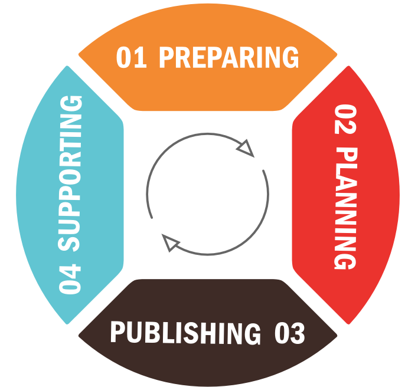

Introduction

Executive Summary
Government agencies have made great strides in opening datasets. However, there is still a great opportunity to produce more datasets in better ways. This will allow agencies to better service citizens, and achieve the “force multiplier” effect that open data can provide.
Leaders at the forefront of open data manage four activities: Plan, Prepare, Publish and Support. Together these four domains form the Open Data Life Cycle. STSI spoke with a broad group of open data visionaries, data owners and data publishers to collect best practices and practical tactics for managing open data.
The Challenge of Open Government
With its open government directive in 2009 and 2013 Executive Order “Making Open and Machine Readable the New Default for Government Information” the White House set clear policy goals for the Federal Government’s data resources.
Government information shall be managed as an asset throughout its life cycle to promote interoperability and openness, and, wherever possible and legally permissible, to ensure that data are released to the public in ways that make the data easy to find, accessible, and usable. In making this the new default state, executive departments and agencies (agencies) shall ensure that they safeguard individual privacy, confidentiality, and national security.
Administrators must meet the challenge of open government and open data policies while securing sensitive data, meeting citizen & user needs, navigating rapidly changing technology, and working under shrinking budgets. This White Paper provides strategies for managing the four stage life cycle of open government data and shares best practices and technical solutions to help meet these challenges.
- Plan - identify and prioritize data, establish policies, create internal governance and accountability
- Prepare - scrub data and define metadata
- Publish - format the data and host it
- Support - increase adoption, market, incorporate customer feedback
Stage 1: Plan
Before releasing open data, the agency identifies which datasets should be published – or even what data exists. They establish internal governance controls to make sure the process maintains momentum.
Identify Data
Most agencies have completed a first pass of identifying data sources to comply with administrative orders. Now is the time to take stock of what additional data might add value. You may find uncollected, mission additive data that could be released by answering the following questions:
- What is the current index of organizational data and where is that data maintained (e.g., healthdata.gov)?
- In budget documents, such as OMB Exhbit 300 filings, what are the largest budget items and what data is associated with them?
- What unstructured data (e.g., pdfs, Word files) exists? Where are the biggest IT storage uses and what are the largest file repositories?
- What are the databases that your agency maintains? What are the transactions in those systems?
- What Freedom of Information Act (FOIA) requests are you receiving? In our discussions with administrators, we found that FOIA requests are often welcomed as part of the process of releasing open data. Releasing data by default can reduce the administrative burden (and cost) of fielding FOIA requests. Can you operationalize the most valuable requests?
Prioritize Data Sets
Once data is discovered, captured and indexed, it must be prioritized. Assigning value and weighing hundreds or thousands of datasets against one another is difficult. Fortunately, the European Union (E.U.) has been exploring these same issues and have written about methods for prioritization. The paper titled “Value-based Prioritisation of Open Government Data Investments” by Leda Bargiotti, et. al explains how to use a “star” based system of prioritizing data. In short, your agency should take its index of datasets and assign each one a star based on specific dimensions to your agency. Borrowing from the E.U. and incorporating the White House executive order, a starting set of dimensions are:
- Obligation – data required by law or other binding requirement.
- Economic/Social benefit – data that creates dollar or time savings, improves quality of life, improves health outcomes, creates new jobs, etc.
- Innovation – data that could lead to new areas of development (e.g. allowing the civilian use of GPS signals or weather data).
- Accountability – increase transparency regarding how budgets are used or results of contracting awards.
- Citizen interest – popularity with users based on inquiries like the number of FOIA requests made, or signatures to a petition.
Create Internal Accountability
Many sources of open data are byproducts mission-oriented work, but data creators may not proactively release valuable datasets. Our discussions with leading administrators surfaced that agencies have had success identifying data “captains” that collaborate horizontally on managing open data within an agency’s internal communities. Captains perform the role of helping data creators make open data the “default”, share best practices and build accountability. Another simple tactic administrators cited for spurring the release of data is creating release calendars for high priority data. This creates a roadmap for data owners and administrators to plan for and follow.
Stage 2: Prepare
Once data has been identified and prioritized, the agency prepares the data for publication. The data is scrubbed for sensitive & personally identifying information (PII) and described with metadata.
Protect PII
Removing PII data from data can be difficult, particularly for unstructured data. Autoredaction technologies are being used for text-based and unstructured data. However, for tabular or structured data, anonymizing data and blurring (aggregating) objects are the best methods for protecting privacy. The U.S. department of Education has useful guidelines for anonymizing data.
While it may not be possible to remove the disclosure risk completely, de-identification is considered successful when there is no reasonable basis to believe that the remaining information in the records can be used to identify an individual.
One guideline administrators mentioned for structured data was aggregating data points up to units of eleven or more. Meaning, that if a personal identifier has fewer than 11 units, it should be aggregated together at a higher level of grouping. For example, if you are publishing averages of standardized test scores for a school, in order to publish the average by classroom, it should have more than 10 students. Continuing with the example, if the classrooms has ten or fewer students, the scores should be aggregated to a larger grouping, like the grade-level.
Provide Context
Descriptive metadata makes datasets indexable and usable. Metadata content includes references to a data dictionary to define data elements, descriptions how the data was collected, guides on interpreting the data, and warnings or disclaimers. Publishing data on sites like data.gov necessitate metadata. If you are wondering what to include, Project Open Data maintains a Common Core Metadata Schema.
You and your agency should verify that personally identifying information about the data creators is not being released the metadata (File formats such as PDF, Word, and Image files often have detailed, hidden metadata that is automatically generated and attached to the file). Metadata is also a place where you can be transparent about data and its shortcomings or at least provide a resource (i.e., a link) to where you maintain release notes.
Stage 3: Publish
Compared to some of the policy and data security issues that agencies face, publishing the data is less formidable. At the same time, administrators recognize that technology is fast moving and keeping up with the most desirable formats and reliable hosting solutions are important for achieving The White House’s order to make “data easy to find, accessible, and usable.”
Format Data
Formatting data, while not technically daunting, impacts how easy a dataset is to deliver, how popular a data set will be, and how useful it is to its audience. The current format of choice for developers is increasingly JSON. JSON is a format that is easily readable and supports hierarchy. XML has broad support for developers and is readable in analysis programs like Excel but results in larger files.
Currently, spreadsheets do not easily support JSON files without additional conversion steps. If spreadsheets or other analytical tools are likely user’s predominate tool, CSV files (comma separated value) or XML may be the best format to publish. Spreadsheet programs like Excel easily save CSV and XML formatted data. Likewise, CSV files are easy to import into Excel. CSVs can sometimes be more difficult for developers to parse automatically given the wide variation in implementation. Also, CSV files do not support hierarchical data. A well-designed API will make data available in multiple formats per user preference.
Also, different domains use different software. For example, much economic analysis is built on a proprietary tool named Stata. Health sciences often use SAS or R, the former being proprietary and the later being open source. Each program will read CSV and sometimes JSON but also have their own proprietary data formats.
Publish an API
Application programming interfaces (APIs) are how developers access the data and integrate it into new applications. Representational State Transfer (REST) APIs or RESTful APIs are the most common type of API today. RESTful APIs have generally overtaken other standards like SOAP.
Well-designed APIs provide documentation for developers. There are several free tools to create API documentation, such as Swagger. The White House and 18F also publish technical standards and guidelines for creating, maintaining and documenting APIs.
Host Data
Many agencies have their own infrastructure for hosting datasets. Other options exist for open, non-classified data. Amazon Web Services is one of the most common data hosts but other IT firms also provide solutions (Windows Azure Storage and Google Cloud Storage). A price war is ongoing and could make hosted options more attractive than just a few years ago. These services provide hosting for storage of raw structured and unstructured data.
Several open source and proprietary options will help you host and manage data. CKAN (Comprehensive Knowledge Archive Network) is an open source package that often marries with a content management system like Wordpress or Drupal (see also DKAN). CKAN is used for data.gov.
You can run CKAN on your own servers or even in cloud based hosts like Microsoft Azure and Amazon EC2. Commercial firms like Socrata also offer data portal products that go beyond simple data storage and offer end-to-end solution which allow users to browse data hosted by your agency and also have some charting and analysis functions.
Stage 4: Support
Once the data is in the “wild”, in some ways the most important work is just beginning. Engaging the community, maintaining data quality, answering users’ questions, providing support around a data set, and incorporating customer feedback are all important tasks to achieve the policy set by the White House.
Engage the Community
Agencies have established a successful blueprint for engaging users through datapaloozas and hackathons. An excellent example is the annual Health Datapalooza that has had over 2000 attendees per event. Similarly NASA’s Space Apps Challenge generates hundreds of projects, and has even resulted in venture funding for multiple companies. Another way administrators have found success is by engaging industry thought leaders. Similiar to hackathons, there are online competitions like Challenge.gov and kaggle.com where agencies can challenge the public to solve a problem or improve on existing solutions.
Answer Questions
There are public question and answer sites like opendata.stackexchange.com. These sites have been extremely popular for professional and hobbyists developers to interact. Users can build reputation points by answering questions and asking questions or performing other beneficial tasks like editing questions. Having data creators participate in these forums can increase uptake of different datasets.
Capture Feedback
Many administrators we talked to cited obtaining feedback and engaging the community of data end users as key challenges. The promise of open data is that: if you make it available, anyone can make something great and unexpected from your data. However, this means that the target user is by definition unexpected. Agencies struggle to connect with those target developers and innovators who will do something great with the data.
One of the tools increasingly used by the public sector is hosted source control management (SCM). SCM is most useful for managing the code used to manipulate data and the documentation for the data. SCM comes in different flavors with Git, Subversion (SVN), and Mercurial (Hg). Git and its popular hosted incarnation, GitHub, currently have the greatest mindshare of developers. These hosted SCM platforms have issue trackers, documentation and wikis built-in to increase collaboration between creators and users. More and more, data scientists are also using these hosted platforms to open their code publicly.
There are a variety of platforms for direct user support, both hosted and self-hosted. Some of the popular hosted platforms are desk.com, zoho.com, and zendesk.com. Data.gov is adding some basic functions around customer support. Customer support software also has the advantage that it can provide portal-like benefits for users where data owners can provide additional documentation related to the datasets. Also, questions can be shared and upvoted publicly so that data creators do not have to answer the same questions repeatedly.
Conclusion
By managing The Open Data Life Cycle in four parts – Plan, Prepare, Publish and Support – agencies can operationalize the release of data, reduce barriers for creators and users, and achieve policy goals set by The White House. To help manage the Open Data Life Cycle, there are a number of policy and technical solutions to help meet this challenge of opening data.
About
About STSI
STSI is a digital government firm that can help you exceed the White House directives and departmental level open government objectives, manage the Open Data Life Cycle, and engage with users.
| stsiinc.com | @stsiinc |
About this Whitepaper
In the spirit of open data, this whitepaper is published in the open. The report contents are available in a GitHub repository. If you have an issue or idea related to the report, please submit a pull request or log an issue.
References
CIO Council. 2012. Creating effective cloud computing contracts for the federal government: Best practices for acquiring IT as a service. Washington, DC: General Services Administration. http://www.gsa.gov/portal/mediaId/164011/fileName/cloudbestpractices.action (accessed March 21, 2014).
Office of Management and Budget. 2009. Open Government Directive. Washington, DC: The White House https://www.whitehouse.gov/open/documents/open-government-directive (accessed April 20, 2015).
Office of the Press Secretary. 2013. Executive Order – Making Open and Machine Readable the New Default for Government Information. Washington DC: The White House https://www.whitehouse.gov/the-press-office/2013/05/09/executive-order-making-open-and-machine-readable-new-default-government- (accessed April 20, 2015).
Immediate Office of the Secretary. 2015. Open Government Plan Version 3.0. Washington DC: Health and Human Services http://www.hhs.gov/sites/default/files/open/plan/open-gov-plan-v3.pdf (accessed May 20, 2015).
McKinsey Global Institute. 2013. Open data: Unlocking innovation and performance with liquid information. San Francisco, CA: McKinsey http://www.mckinsey.com/insights/business_technology/open_data_unlocking_innovation_and_performance_with_liquid_information (accessed July 8, 2015).
IDC Government Insights. 2012. The Impact of Big Data on Government. Alexandria, VA. Iron Mountain http://www.ironmountain.com/Knowledge-Center/Reference-Library/View-by-Document-Type/White-Papers-Briefs/Sponsored/IDC/The-Impact-of-Big-Data-on-Government.aspx
Leda Bargiotti et al. 2013. Value-based prioritisation of Open Government Data investments. Brussels, Belgium. World Wide Web Consortium (W3C) https://www.w3.org/2013/share-psi/wiki/images/c/c0/Paper_Publishing_high-value_datasets_as_a_priority.pdf (accessed July 8, 2015)
Ian Kalin. 2013. Datapalooza How-To Guide. Washington, DC. Socrata http://www.socrata.com/wp-content/uploads/Socrata-Datapalooza-How-To-Guide.pdf (accessed May
Eric Whitney. 2013. Datapalooza: A Concept, A Conference And A Movement. Centennial, CO. National Public Radio http://www.npr.org/sections/health-shots/2013/06/07/189565146/datapalooza-a-concept-a-conference-and-a-movement (accessed July 8, 2015)
Technical Appendix
Please note: The following sources is provided without endorsement or warranty by STSI, sources for this white paper or interviewees. The data should be used for information purposes only.
Cloud Data Storage:
- Amazon S3
- Microsoft Azure Storage
- Google Cloud Storage
Source Control Management:
- GitHub - https://github.com/
- Kiln - https://www.fogcreek.com/kiln/
- BitBucket - https://bitbucket.org/
Q & A sites
- Stackoverflow - http://opendata.stackexchange.com/
- Quora - http://www.quora.com/Open-Data
Data Portals
- CKAN - http://ckan.org/
- DKAN - http://nucivic.com/dkan/
- Socrata Open Data Portal - http://www.socrata.com/products/open-data-portal/
Application Programming Interface Documentation:
- Swagger - http://swagger.io/
- Apiary - https://apiary.io/
- Mashape - https://www.mashape.com
Customer Support:
- Zendesk - https://www.zendesk.com/
- Desk.com - http://www.desk.com/
- Freshdesk - http://freshdesk.com/
- Zoho - https://www.zoho.com/support/
Image Credit
Cover image: Alexander Jackson Davis “Interior of the Hall of Representatives” from http://www.loc.gov/exhibits/us.capitol/s4.html